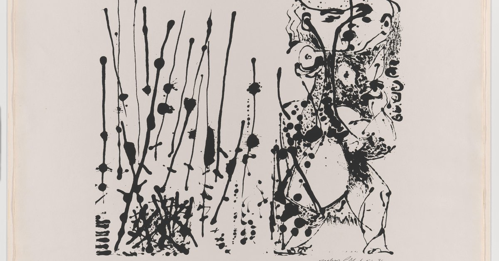
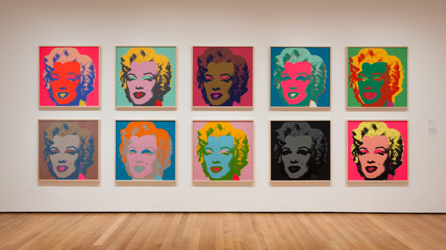
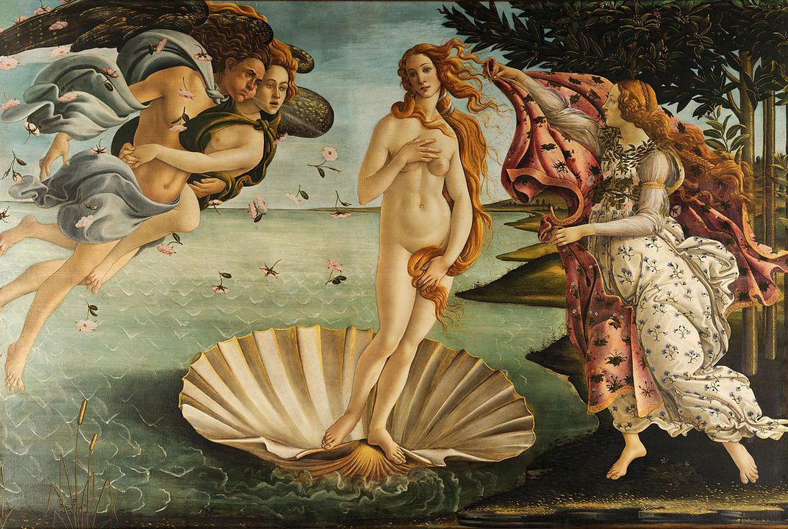
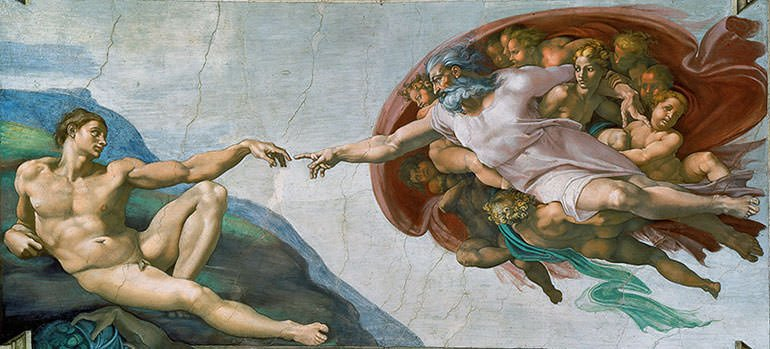

Модерно изкуство

Джаксън Полък (на английски: Paul Jackson Pollock) е американски художник, водеща фигура на абстрактния експресионизъм. Страда от алкохолизъм през целия си живот. Умира на 44 години при автомобилна катастрофа, след като кара пиян. Приживе се радва на значим успех и слава. От друга страна, предпочита да се усамотява и има нестабилна психика. През 1945 г. се жени за художничката Лий Краснър, която впоследствие оказва важно влияние върху творчеството му и допринася за посмъртната му слава.[1] В неговите творби се забелязва влиянието на творци като Диего Ривера и Хосе Клементе Ороско, но той изработва своя уникална техника и стил, които се състоят в капане и пръскане на боята върху платното. Прави първата си изложба през 1948 година, която има голям финансов успех. През 1949 година е обявен за най-великия американски художник. През 2006 година на търг е продадена неговата картина „Номер 5, 1948“ за 140 милиона долара.[2] Тя става най-скъпата картина в света. През 2000 година животът на Полък става тема на филм, носещ неговото име, режисиран от Ед Харис.
Полък е роден в Коди, Уайоминг през 1912 година[3], като последният от петима братя. Родителите му, Стела Мей и Лирой Полък, са израснали в Тингли, Айова. Баща му е роден с фамилното име Макой, но приема името на съседите, които го осиновяват, след като и двамата му родители умират в рамките на една година. Стела и Лирой Полък са презвитерианци от ирландски произход, бащата е наполовина от шотландски произход. [4] Лирой Полък е фермер и по-късно става правителствен земемер. [3] Джаксън израства в Аризона и Чико, Калифорния. Докато живее в Еко Парк, Калифорния, се записва в училище по приложни изкуства в Лос Анджелис,[5] от което впоследствие е изключен. През ранните си години се доближава до индианската култура, докато придружава баща си при земемерни маршрути. [3][6] През 1930 г., следвайки брат си Чарлс Полък, се мести в град Ню Йорк, където и двамата учат при Томас Харт Бентън в манхатънското училище по рисуване Art Students League of New York. Фокусът на Бентън върху провинциална Америка има само краткотрайно влияние върху Полък, но неговата ритмична употреба на боите и независимостта му оставят траен отпечатък върху младия художник.[3] От 1938 до 1942 г. Полък работи по т. нар. Федерален проект за изкуство (на английски: Federal Art Project), финансиран от правителството по време на голямата депресия.[7]

Анди Уорхол (на английски: Andy Warhol) е американски художник, водещ представител на течението поп арт. След успешна кариера като илюстратор на реклами, той става световноизвестен със своята работа като художник, авангарден кинорежисьор, звукозаписен продуцент и писател. В центъра на творчеството на Анди Уорхол е общата представа за американската култура. Той рисува пари, доларови знаци, храна, женски обувки, известни личности и изрезки от вестници. За него тези предмети олицетворяват американските културни ценности. Например Кока Кола представлява демократичното равенство между хората, защото: „Кока Кола винаги е Кока Кола, Кока Колата, която пие президентът, е същата като твоята или моята.“ Той използва популярни образи и методи за визуализиране на американската идентичност през 20. век. Този нов поглед към американската култура е тема и резултат в творчеството му. Освен изкуството, Анди Уорхол е доста популярен и с твърдението си, че „в бъдеще всеки ще бъде световноизвестен за 15 минути“. По-късно той се пошегувал пред репортери: „Моята нова реплика е, че след 15 минути всички ще бъдат известни“.
Анди Уорхол е роден на 6 август 1928 година в Питсбърг, Пенсилвания,[1] в семейството на Ондрей Вархола (1888 – 1942) и Юлия Юстина (1892 – 1972).[2][3] Бащата и майката на Уорхол имигрират в Съединените щати съответно през 1914 и 1921 година от селцето Мико в днешна Словакия и са русини[4] с източнокатолическо вероизповедание. В Америка бащата е миньор в каменовъглена мина. Анди Уорхол има двама по-големи братя, Пол (Павол), чийто син Джеймс Уорхола става илюстратор на детски книги, и Джон (Ян). Когато е в трети клас, Анди Уорхол се разболява от хорея, болест на нервната система, която предизвиква неволни движения на крайниците и петна по кожата. Заболяването вероятно е усложнение след прекарана скарлатина.[5] С времето той развива хипохондрия и страх от болници и лекари. Много болнаво дете, Анди Уорхол остава изолиран в училище и силно привързан към майка си.[6] Той прекарва дълго време на легло, като рисува, слуша радио и колекционира снимки на кинозвезди. Самият той по-късно описва този период от живота си като много важен за развитието на личността, уменията и предпочитанията му.
Класическо изкуство

Алесандро ди Мариано ди Вани Филипепи (1445 – 1510), по-известен катo Сандро Ботичели (на италиански: Sandro Botticelli), е италиански художник. Наследява прякора си, който означава „Бъчвичката“, от пълния си по-голям брат. Ботичели е един от най-големите италиански живописци от Флорентинската школа, творил по времето на Високия Ренесанс. Създава картини по митологически – „Раждането на Венера“ (1485), „Пролет“ (1478) – както и по християнски мотиви. По-късните му произведения са мрачни и драматични.
Сандро Ботичели е роден във Флоренция. От 1461 г. учи живопис при Филипо Липи, а по-късно е ученик и на забележителния скулптор и живописец Андреа Верокио, където се сближава с Леонардо да Винчи, който също е ученик на Верокио. Името на Ботичели става известно благодарение на платното „Поклонението на влъхвите“ (1476 г.), с което привлича вниманието на Медичите. На тази картина (днес в Галерия Уфици, Флоренция) той рисува своя единствен автопортрет. По това време културното развитие на Флоренция е в разцвет и градът успешно съперничи на Рим. Политическата власт е в ръцете на няколко богати фамилии, които постоянно си съперничат. Борбата между тях приключва с победата на банкерската фамилия Медичи. Главата на фамилията – Козимо Медичи, става негласен управител на Флоренция. В неговия двор се стичат писатели, поети, учени, архитекти и художници. Ботичели е близък с Медичите и работи за тях. Междувременно илюстрира с множество рисунки „Божествена комедия“ на Данте Алигиери.

Микеланджело ди Лудовико Буонароти Симони, известен още само като Микеланджело, е италиански ренесансов скулптор, художник, поет и архитект, представител на Флорентинската школа. Смятан е за един от тримата титани на Ренесансовото изкуство заедно с Леонардо да Винчи и Рафаело. Творчеството на Микеланджело се отличава с патос и непрекъснато търсене на идеала за красота като отражение на идеалите на епохата за физическа и духовна мощ и трагизъм. То оказва силно влияние върху Тициан и венецианската живопис и се смята за основа на стила маниеризъм.
Микеланджело е роден на 6 март 1475 г. в Капрезе (днес Капрезе Микеланджело), селище край Арецо в Тоскана, което по това време е част от територията на Флорентинската република.[1] В продължение на няколко поколения семейството му притежава малка банка във Флоренция, но баща му Лудовико ди Леонардо ди Буонарото Симони не успява да я управлява добре и е принуден да заема различни чиновнически постове. По времето, когато се ражда Микеланджело, баща му е съдебен администратор на Капрезе и управител на съседното градче Киузи. Майката на Микеланджело се казва Франческа ди Нери дел Миниато ди Сиена.[2] Семейството претендира за произход от графиня Матилда Тосканска и, макар че доказателства липсват, самият Микеланджело вярва в тази теория.[3] Няколко месеца след раждането на Микеланджело семейството се връща във Флоренция, където той израства. По-късно, когато майка му заболява тежко, и след нейната смърт през 1481 година Микеланджело прекарва продължителни периоди при дойката си и нейния съпруг каменоделец в градчето Сетиняно, където баща му притежава кариера за мрамор и малка ферма.[2] Според Джорджо Вазари по-късно Микеланджело казвал: „Ако има нещо добро в мен, то е защото бях роден в деликатната атмосфера на областта на Арецо. Заедно с млякото от моята дойка, получавах и уменията да работя с длетото и чука, с които правя моите фигури.“[1]
Back to top